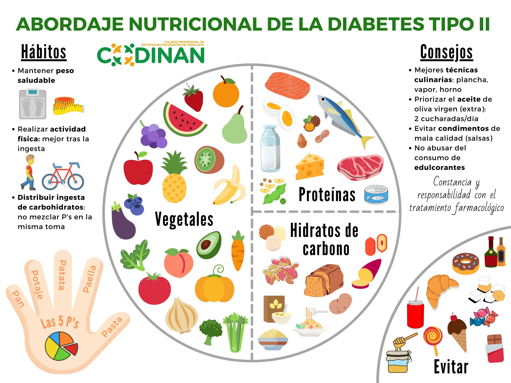
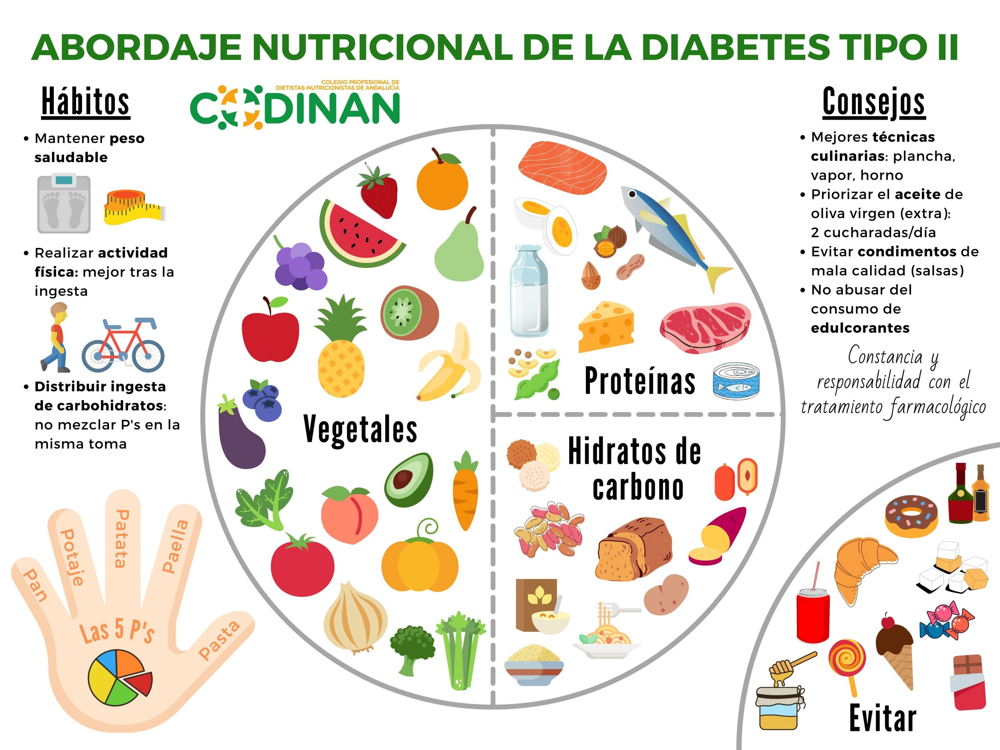
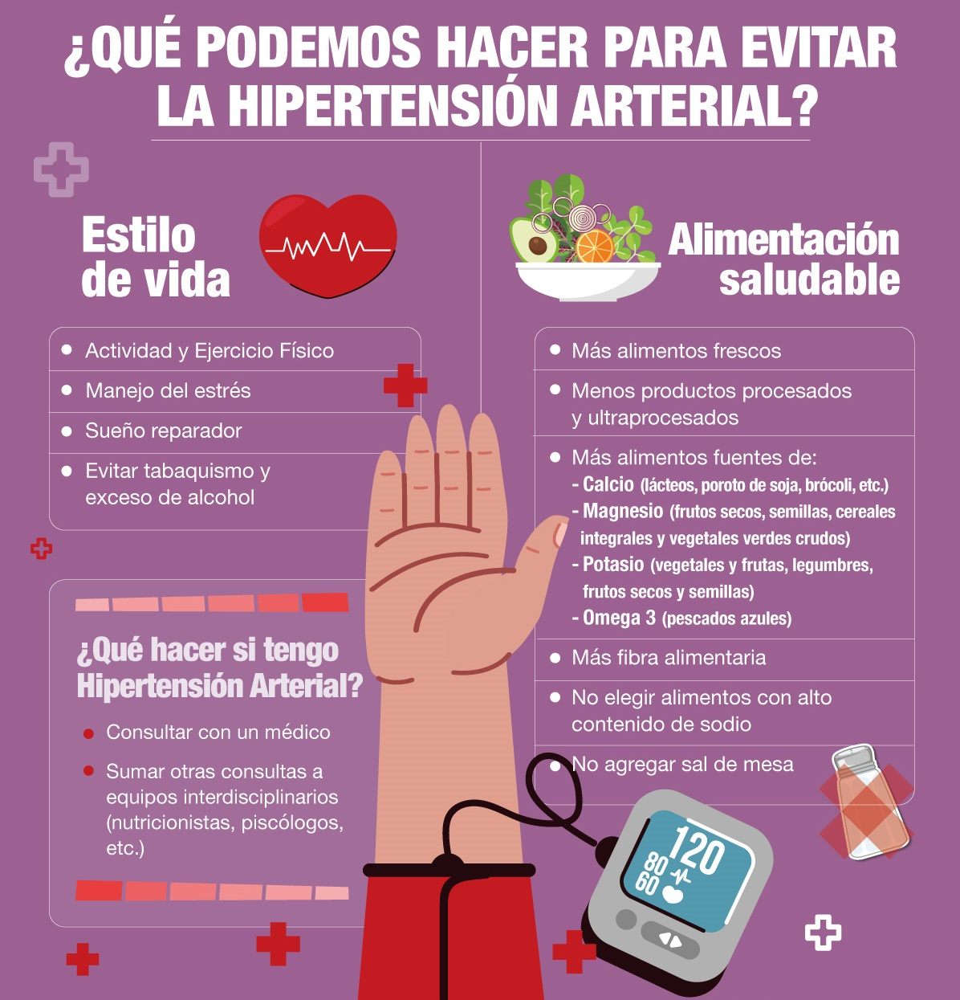
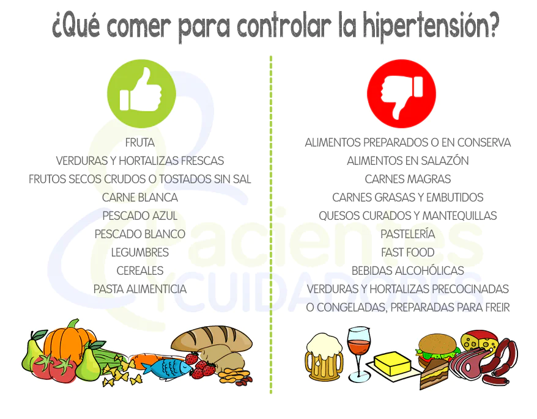
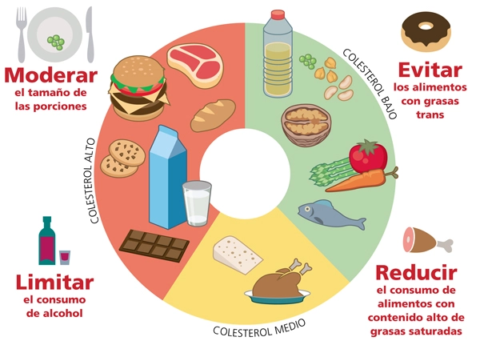
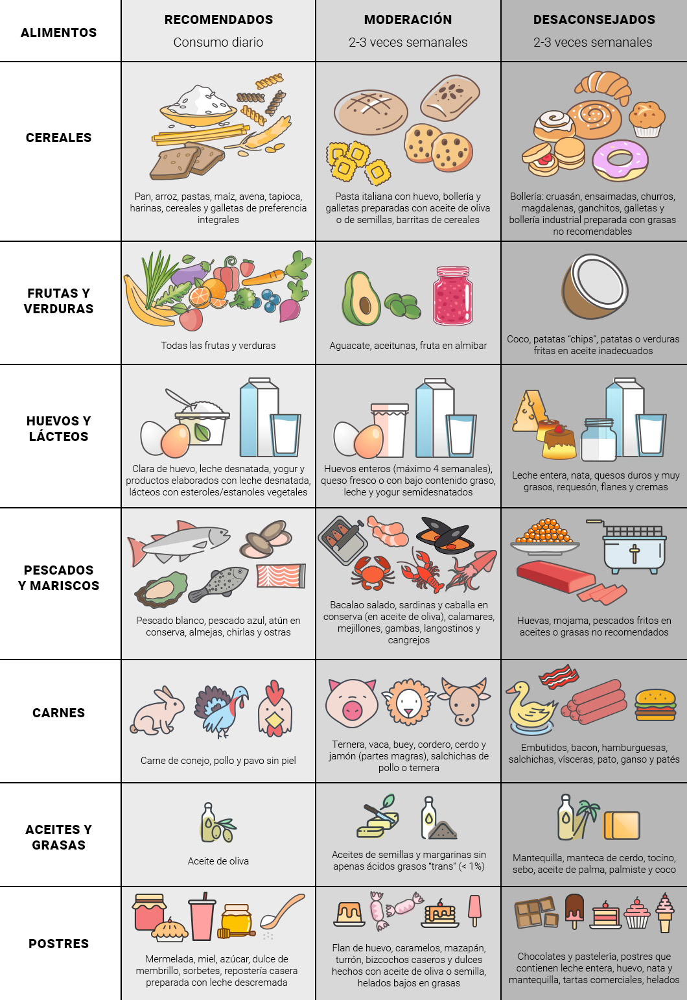

Comienza tu viaje hacia una vida más saludable con un plan adecuado para ti
¿No sabes por dónde empezar? ¡Solicita tu consulta gratis ahora!
 

- 1 taza de avena integral cocida (puede endulzarse con canela o un poco de stevia si se desea).
- 1 huevo cocido o revuelto con espinacas y tomate.
- 1 porción de fruta (por ejemplo, 1 manzana pequeña o 1/2 naranja).
- 1 taza de café o té sin azúcar (si se desea).
En el desayuno
- 1 puñado de nueces o almendras (aproximadamente 10-12 unidades).
- 1 yogurt natural sin azúcar (puede ser griego para más proteína).
Media mañana
- 1 porción de proteína magra (pollo, pescado o pavo) de unos 120-150 g.
- 1/2 taza de arroz integral o quinoa.
- Ensalada verde con hojas de lechuga, pepino, tomate y aderezo de aceite de oliva con vinagre balsámico (sin azúcar).
- 1 porción de vegetales cocidos al vapor (por ejemplo, brócoli, zanahorias o calabacines).
- 1 vaso de agua o té sin azúcar.
Almuerzo
- 1 manzana o 1 pera pequeña.
- 1 puñado de semillas de chía o calabaza (aproximadamente 1 cucharada).
Merienda
- 1 porción de pescado (salmón, tilapia o similar) o tofu si prefieres una opción vegetariana.
- 1 taza de verduras al vapor (por ejemplo, brócoli, espárragos, espinacas).
- 1/2 camote o batata cocida.
- 1 vaso de agua o infusión sin azúcar.
Cena
- Control de carbohidratos: Es clave controlar las porciones de carbohidratos para evitar picos de glucosa. Preferir carbohidratos complejos (como avena, arroz integral, batata) en lugar de carbohidratos refinados (pan blanco, pasteles, etc.).
- Evitar azúcares añadidos: Evita alimentos y bebidas con azúcares añadidos, como refrescos, jugos artificiales y dulces procesados.
- Distribuir las comidas: Es recomendable comer varias veces al día (3 comidas principales y 2 meriendas) para mantener estables los niveles de glucosa.
- Grasas saludables:Incluir grasas saludables como las que provienen de aguacates, frutos secos y aceite de oliva. Evitar grasas trans y saturadas.
- Hidratación: Beber suficiente agua a lo largo del día.
Consejos adicionales


- 1 taza de avena integral cocida (endulzada con una pizca de canela o 1 cucharadita de miel).
- 1 huevo revuelto con espinacas y tomates.
- 1 naranja o 1 manzana pequeña.
- 1 taza de té verde o café sin azúcar.
Desayuno
- 1 puñado de almendras o nueces (aproximadamente 10-12 unidades).
- 1 yogurt natural bajo en grasa o sin azúcar.
Media Mañana
- 1 porción de proteína magra (pollo a la plancha, pescado como salmón o atún) de unos 120-150 g.
- 1/2 taza de quinoa o arroz integral.
- Ensalada de hojas verdes (espinacas, lechuga, rúcula) con pepino, tomate, zanahoria rallada, aderezada con aceite de oliva y vinagre balsámico.
- 1/2 taza de vegetales al vapor (por ejemplo, brócoli o espárragos).
- 1 vaso de agua con una rodaja de limón o infusión sin azúcar.
Almuerzo
- 1 manzana o 1 pera.
- 1 puñado de semillas de chía o de girasol.
Merienda
- 1 porción de pescado (salmón o trucha, ricos en ácidos grasos omega-3).
- 1 taza de verduras al vapor (calabacín, brócoli, espinacas).
- 1/2 camote o batata cocida (rica en potasio).
- 1 vaso de agua o infusión de hierbas (como manzanilla o menta).
Cena
- Reducir el sodio: Evitar alimentos procesados, embutidos, comida rápida, sopas enlatadas y salsas industrializadas, que suelen ser ricos en sodio.
- Aumentar el potasio: Consumir alimentos ricos en potasio, como plátanos, aguacates, patatas, espinacas y tomates, ya que este mineral ayuda a equilibrar los efectos del sodio en el cuerpo.
- Grasas saludables: Priorizar grasas saludables provenientes de aceite de oliva, aguacate, frutos secos y pescado, en lugar de grasas saturadas o trans.
- Comer frutas y verduras frescas: Son ricas en fibra, vitaminas y minerales, esenciales para el control de la presión arterial.
- Limitar el alcohol y la cafeína: El consumo excesivo de estas sustancias puede elevar la presión arterial.
- Hidratación: Mantenerse bien hidratado es importante para la salud cardiovascular.
Consejos adicionales


- 1 taza de avena cocida con canela y semillas de chía (puede endulzarse con stevia si se desea).
- 1 huevo cocido o revuelto con espinacas y tomate.
- 1 porción de fruta (por ejemplo, 1/2 toronja o 1 manzana pequeña).
- 1 taza de té verde o café sin azúcar.
Desayuno
- 1 puñado de almendras o nueces (aproximadamente 10-12 unidades).
- 1 yogur natural sin azúcar (puede ser griego para más proteína).
Media Mañana
- 1 porción de proteína magra (pollo, pescado o pavo) de unos 120-150 g.
- 1/2 taza de quinoa o arroz integral.
- Ensalada con hojas verdes, pepino, tomate, zanahoria y aderezo de aceite de oliva con limón.
- 1 porción de vegetales cocidos al vapor (por ejemplo, brócoli, zanahorias o calabacines).
- 1 vaso de agua o infusión sin azúcar.
Almuerzo
- 1 puñado de semillas de calabaza o lino (aproximadamente 1 cucharada).
- 1 porción de frutos rojos (fresas, moras o arándanos).
Merienda
- 1 porción de pescado graso (salmón, sardinas o atún) o tofu si prefieres una opción vegetariana.
- 1 taza de verduras al vapor (por ejemplo, espárragos, calabacines o espinacas).
- 1/2 batata o camote cocido.
- 1 vaso de agua o infusión sin azúcar.
Cena
- Aumentar la fibra: Consumir alimentos ricos en fibra soluble como avena, legumbres, frutas y verduras ayuda a reducir el colesterol.
- Evitar grasas saturadas y trans: Reducir el consumo de carnes procesadas, frituras y lácteos enteros. Optar por grasas saludables como el aceite de oliva y los frutos secos.
- Incluir antioxidantes: Frutas y verduras frescas aportan antioxidantes que ayudan a proteger el corazón.
- Beber suficiente agua: Mantenerse bien hidratado con agua, infusiones o té sin azúcar.
- Ejercicio regular: Realizar actividad física al menos 30 minutos al día para mejorar la salud cardiovascular.